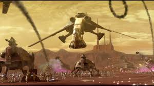
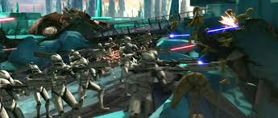
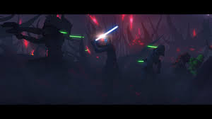
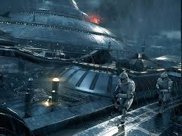
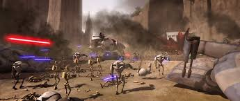
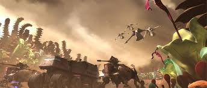
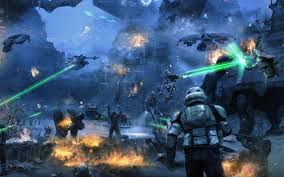
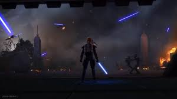

CLONE WARS COMMAND
Major Battles of the Clone Wars
Key engagements that shaped the fate of the galaxy. Each battle involved heroic efforts from clone troopers, Jedi Generals, and the Republic’s war machine.
-
Battle of Geonosis — The first major battle of the Clone Wars, fought in the Geonosian arena and surrounding desert. Jedi Masters Mace Windu, Obi-Wan Kenobi, and Anakin Skywalker led the charge. The Grand Army of the Republic was deployed for the first time, including the 212th Attack Battalion and other divisions.
 -
Battle of Christophis — A vital early war battle, where Generals Kenobi and Skywalker held off a Separatist siege. The 501st Legion and 212th fought bravely, and it was here that Ahsoka Tano was first assigned to Anakin.
 -
Battle of Umbara — A grueling and controversial campaign led by General Pong Krell, who pushed the 501st Legion to its limits. Captain Rex and Fives faced moral conflicts as clones were pitted against each other under unclear orders.
 -
Battle of Kamino — The cloning facilities were attacked by Separatist forces aiming to cripple the Republic's ability to produce more troops. The 501st and ARC troopers like Fives and Echo mounted a desperate defense alongside Jedi General Shaak Ti.
 -
Battle of Ryloth — Liberation of the Twi’lek homeworld by Jedi Generals Mace Windu and Obi-Wan Kenobi. The 212th and 104th Battalions (under Commander Cody and Commander Wolffe) executed coordinated strikes against Separatist forces.
 -
Battle of Felucia — A lush and deadly front where Jedi Aayla Secura led the 327th Star Corps (including Commander Bly). Felucia was the site of intense jungle fighting and one of the Jedi casualties during Order 66.
 -
Battle of Kashyyyk — The Wookiee homeworld was defended by Jedi Master Yoda and the 41st Elite Corps, commanded by Luminara Unduli and Clone Commander Gree. A massive amphibious and jungle battle took place as Order 66 was executed.
 -
Siege of Mandalore — The final major conflict before the fall of the Republic. Led by former Jedi Ahsoka Tano and Captain Rex, members of the 501st pursued Darth Maul on Mandalore. The siege ended just as Order 66 began, leading to the collapse of the Jedi Order.
